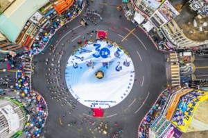
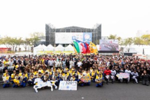
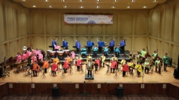

| 傳承之聲 | 精彩演出 | |
| 傳承之聲---管樂節歷史發展 | |
日據時代昭和6年（民國20年）嘉義設立第一支本地學生吹奏樂隊，經由市民熱情回應後，管樂風潮便於嘉義地區開始發芽茁壯，其他學校也開始紛紛成立管樂隊，於1993年舉辦的第一屆管樂節當時只有嘉義農專、嘉義高中、嘉義女中、嘉義高工、嘉義家職 五支管樂社團參演，從此寫下管樂在嘉義的新樂章。2011年成功爭取到國際管樂重要活動－「世界管樂年會（WASBE）」主辦權，吸引來自國際14個優秀樂團報名參加，超過3,000名國際管樂演奏者、300位以上的音樂家齊聚嘉義市，將嘉義市國際管樂節的氣氛和國際能見度推向更高點。 2026年嘉義市國際管樂節將正式邁入第34屆，30年來嘉義市不斷透過管樂對外溝通，利用音樂奠定與在地人、觀光客等對於嘉義市城市意象，主動製造聆聽，引導大眾對於嘉義市、管樂的討論與好奇，一步一腳印締造出象徵獨一無二的城市品牌。 |
|
 |
 |
| 精彩演出---介紹活動內容 | |
| 每年均邀請4支以上的國際表演隊伍及國內優秀管樂團隊參加演出。行進樂隊在3公里長的中山路「管樂大道」上進行表演，創意踩街參賽隊伍則是以「音樂」為創意元素來共襄盛舉，創造本市特有的文化節慶。「定點表演」與開幕典禮同時在市立體育場舉行，參演之樂旗隊伍盡情揮灑美技，進行各項隊形變換與分列式表演。 | |
 |
|